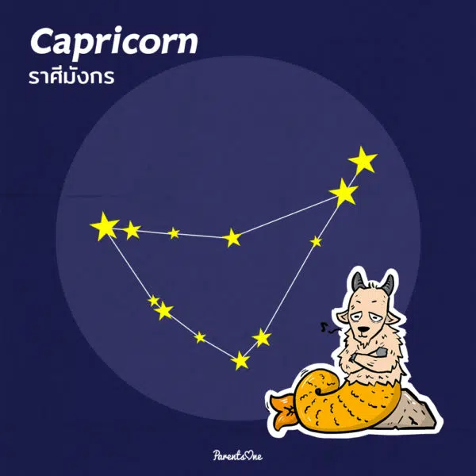

-3.png)

Capricorn – กลุ่มดาวมังกร หรือ แพะทะเล (ราศีมังกร)
กลุ่มดาวแพะทะเล ประจำราศีมังกร ซึ่งกลุ่มดาวนี้จะอยู่ตรงข้ามกับกลุ่มดาวราศีปู
ซึ่งกลุ่มดาวนี้จะไม่มีดาวที่สว่างจ้าจนสังเกตได้ง่าย แต่เมื่อรวมตัวกันแล้ว จะเห็นเป็นรูปร่างคล้ายสามเหลี่ยมที่มีฐานโค้ง ซึ่งกลุ่มดาวนี้จะให้เห็นอยู่เหนือศีรษะตอน 3 ทุ่มของวันที่ 20 กันยายน ซึ่งกลุ่มดาวแพะทะเลเป็นกลุ่มดาวที่สำคัญมีความสำคัญต่อนักดาราศาสตร์และนักภูมิศาสตร์มากเช่นกัน
ซึ่งกลุ่มดาวนี้จะไม่มีดาวที่สว่างจ้าจนสังเกตได้ง่าย แต่เมื่อรวมตัวกันแล้ว จะเห็นเป็นรูปร่างคล้ายสามเหลี่ยมที่มีฐานโค้ง ซึ่งกลุ่มดาวนี้จะให้เห็นอยู่เหนือศีรษะตอน 3 ทุ่มของวันที่ 20 กันยายน ซึ่งกลุ่มดาวแพะทะเลเป็นกลุ่มดาวที่สำคัญมีความสำคัญต่อนักดาราศาสตร์และนักภูมิศาสตร์มากเช่นกัน
Aquarius – กลุ่มดาวคนแบกหม้อน้ำ (ราศีกุมภ์)
กลุ่มดาวคนแบกหม้อน้ำ กลุ่มดาวประจำราศีกุมภ์เป็นกลุ่มดาวที่อยู่ถัดจากกลุ่มดาวแพะทะเลไปทางทิศตะวันออก (ขวามือ) ซึ่งกลุ่มดาวนี้จะประกอบไปด้วยดาวฤกษ์ที่มีแสงน้อยประมาณ 13 ดวง
และดวงอาทิตย์จะผ่านกลุ่มดาวในช่วงวันที่ 16 กุมภาพันธ์ ถึง 13 มีนาคม และจะอยู่บนท้องฟ้าให้เห็นประมาณ 10 ชั่วโมง
และดวงอาทิตย์จะผ่านกลุ่มดาวในช่วงวันที่ 16 กุมภาพันธ์ ถึง 13 มีนาคม และจะอยู่บนท้องฟ้าให้เห็นประมาณ 10 ชั่วโมง
Pisces – กลุ่มดาวปลาคู่ (ราศีมีน)
กลุ่มดาวปลา กลุ่มดาวประจำราศีมีน เป็นกลุ่มดาวที่ค่อนข้างหาได้ยาก และเป็นที่อ้างถึงในหมู่นักดาราศาสตร์กัน เพราะในวันที่ 21 มีนาคม
เป็นวันที่ดวงอาทิตย์เคลื่อนที่เข้ามาในราศีนี้ แต่ทางโหราศาสตร์สากล ถือว่าวันที่ 21 มีนาคม เป็นวันที่ดวงอาทิตย์เริ่มเข้าสู่ราศีเมษ
ซึ่งจริงๆ แล้ววันที่ 21 เป็นวันที่เส้น Ecliptic ตัดกับเส้นศูนย์สูตร และดวงอาทิตย์ก็จะเริ่มโคจรเข้ามาอยู่กลุ่มดาวปลาคู่ตัวนี้ แล้วก็ค่อยๆ เคลื่อนที่ไปทางทิศตะวันออก
และในวันที่ 21 มีนาคมก็ถือว่าเป็นวันเริ่มต้นฤดูใบไม้ผลิ อีกทั้งยังเป็นวันที่มีช่วงเวลากลางวันและกลางคืนเท่ากันอีกด้วย
เป็นวันที่ดวงอาทิตย์เคลื่อนที่เข้ามาในราศีนี้ แต่ทางโหราศาสตร์สากล ถือว่าวันที่ 21 มีนาคม เป็นวันที่ดวงอาทิตย์เริ่มเข้าสู่ราศีเมษ
ซึ่งจริงๆ แล้ววันที่ 21 เป็นวันที่เส้น Ecliptic ตัดกับเส้นศูนย์สูตร และดวงอาทิตย์ก็จะเริ่มโคจรเข้ามาอยู่กลุ่มดาวปลาคู่ตัวนี้ แล้วก็ค่อยๆ เคลื่อนที่ไปทางทิศตะวันออก
และในวันที่ 21 มีนาคมก็ถือว่าเป็นวันเริ่มต้นฤดูใบไม้ผลิ อีกทั้งยังเป็นวันที่มีช่วงเวลากลางวันและกลางคืนเท่ากันอีกด้วย
Aries กลุ่มดาวแกะ (ราศีเมษ)
เป็นกลุ่มดาวกลุ่มแรกในกลุ่มดาวจักรราศี นั่นก็คือกลุ่มดาวแกะตัวผู้ ประจำราศีเมษนั่นเองจุดสังเกตของกลุ่มดาวกลุ่มนี้คือมีดาวที่สว่างจ้าอยู่ 3 ดวงและรูปร่างคล้ายสามเหลี่ยมมุมป้านนั่นเอง
แต่กลุ่มดาวแกะจะมีให้เห็นชัดเจนและอยู่เหนือศีรษะในตอน 3 ทุ่ทของวันที่ 10 ธันวาคมของทุกปีจ้า
แต่กลุ่มดาวแกะจะมีให้เห็นชัดเจนและอยู่เหนือศีรษะในตอน 3 ทุ่ทของวันที่ 10 ธันวาคมของทุกปีจ้า
Taurus – กลุ่มดาววัว (ราศีพฤษภ)
กลุ่มดาวต่อไปคือ กลุ่มดาววัว ประจำราศีพฤษภ ซึ่งคนไทยจะเห็นดาวกลุ่มนี้เป็นกลุ่มดาวธง ซึ่งเจ้ากลุ่มดาวธงที่ว่าก็คือกลุ่มดาววัว อาจจะเป็นเพราะมุมมองที่เราเห็นนั่นดูเหมือนธง
แต่ก็อาจจะมองเป็นหน้าวัวได้ด้วยเช่นกันนั่นเอง
แต่ก็อาจจะมองเป็นหน้าวัวได้ด้วยเช่นกันนั่นเอง
Gemini – กลุ่มดาวคนคู่ (ราศีเมถุน)
กลุ่มดาวคนคู่ที่ประจำราศีเมถุนมักจะเห็นอยู่กลางท้องฟ้าเวลา 3 ทุ่มของวันที่ 20 กุมภาพันธ์ของทุกปี ซึ่งกลุ่มดาวกลุ่มนี้มีจุดสังเกตตรที่จะมีดาวสว่างจ้า 2 ดวงอยู่ใกล้กัน และจะอยู่ใกล้ๆ กับกลุ่มดาววัว
ซึ่งดาวสว่างจ้าทั้งสองดวง (หรือที่เรารู้จักในชื่อของดาวฤกษ์) มีชื่อว่า พอลลักซ์และแคสเตอร์ โดยที่คนโบราณทั่วไปจะมองเป็นคู่แฝด แต่ชาวอาหรับเห็นเป็นนกยูง 2 ตัว
ชาวอียิปต์จะมองเป็นต้นไม้ใหญ่ 2 ต้น และชาวฮินดูก็จะมองเป็นเทพเจ้า 2 องค์ ขึ้นอยู่กับความเชื่อแตกต่างในแต่ละคน
ซึ่งดาวสว่างจ้าทั้งสองดวง (หรือที่เรารู้จักในชื่อของดาวฤกษ์) มีชื่อว่า พอลลักซ์และแคสเตอร์ โดยที่คนโบราณทั่วไปจะมองเป็นคู่แฝด แต่ชาวอาหรับเห็นเป็นนกยูง 2 ตัว
ชาวอียิปต์จะมองเป็นต้นไม้ใหญ่ 2 ต้น และชาวฮินดูก็จะมองเป็นเทพเจ้า 2 องค์ ขึ้นอยู่กับความเชื่อแตกต่างในแต่ละคน
Cancer – กลุ่มดาวปู (ราศีกรกฎ)
สำหรับกลุ่มดาวปูประจำราศีกรกฏ เป็นกลุ่มดาวที่หายากที่สุดในบรรดา 12 กลุ่มดาวจักรราศี โดยวิธีหากลุ่มดาวนี้จะต้องหากลุ่มดาวคนคู่และกลุ่มดาวสิงโตให้ได้ก่อน
และเมื่อเจอทั้งสองกลุ่มดาวแล้ว ให้หากลุ่มดาวฤกษ์ที่เกาะกลุ่มกัน 8 ดวง ที่ประกอบเป็นตัวปูนั่นเอง ความน่าสนใจของกลุ่มดาวปูคือจะเห็นว่ากลุ่มดาวจะเดินหน้าถอยหลังตามการเคลื่อนที่ของดวงอาทิตย์
หรือเรียกว่า Tropic of Cancer กลุ่มดาวปู่จะเห็นชัดในช่วงวันที่ 22 มิถุนายนของทุกปี ซึ่งวันนี้ก็เป็นวันที่มีกลางวันมากกว่ากลางคืนอีกด้วย
และเมื่อเจอทั้งสองกลุ่มดาวแล้ว ให้หากลุ่มดาวฤกษ์ที่เกาะกลุ่มกัน 8 ดวง ที่ประกอบเป็นตัวปูนั่นเอง ความน่าสนใจของกลุ่มดาวปูคือจะเห็นว่ากลุ่มดาวจะเดินหน้าถอยหลังตามการเคลื่อนที่ของดวงอาทิตย์
หรือเรียกว่า Tropic of Cancer กลุ่มดาวปู่จะเห็นชัดในช่วงวันที่ 22 มิถุนายนของทุกปี ซึ่งวันนี้ก็เป็นวันที่มีกลางวันมากกว่ากลางคืนอีกด้วย
Leo – กลุ่มดาวสิงโต (ราศีสิงห์)
กลุ่มดาวราศีสิงห์ หรือ กลุ่มดาวสิงโต เป็นหนึ่งในกลุ่มดาวที่หลายคนรู้จักและสะดุดตามากที่สุดอีกกลุ่มหนึ่ง ซึ่งกลุ่มดาวสิงโตเป็นกลุ่มดาวที่เก่าแก่ที่สุดตามที่มีการบันทึกมา
โดยที่กลุ่มดาวสิงโตจะเริ่มเห็นตั้งแต่ช่วงค่ำและจะอยู่เหนือหัวตอน 3 ทุ่มในวันที่ 10 พฤษภาคมของทุกปี และในแง่ของความเชื่อของชาวอียิปต์ก็มีคนสันนิษฐานว่า
ตัวสฟิงส์นั่นมาจากส่วนหัวของหญิงพรหมจารีย์ (ราศีกันย์) รวมกับส่วนตัวของสิงโค (ราศีสิงห์) นั่นเอง
โดยที่กลุ่มดาวสิงโตจะเริ่มเห็นตั้งแต่ช่วงค่ำและจะอยู่เหนือหัวตอน 3 ทุ่มในวันที่ 10 พฤษภาคมของทุกปี และในแง่ของความเชื่อของชาวอียิปต์ก็มีคนสันนิษฐานว่า
ตัวสฟิงส์นั่นมาจากส่วนหัวของหญิงพรหมจารีย์ (ราศีกันย์) รวมกับส่วนตัวของสิงโค (ราศีสิงห์) นั่นเอง
Virgo – กลุ่มดาวหญิงสาวพรหมจารี (ราศีกันย์)
กลุ่มดาวหญิงพรหมจารีย์ หรือกลุ่มดาวราศีกันย์ เป็นกลุ่มดาวที่อยู่ระหว่างกลุ่มดาวสิงโตและกลุ่มคั่นชั่ง โดยที่กลุ่มดาวนี้จะมีดาวฤกษ์ที่ชื่อว่า สไปกา (Spica) แปลว่ารวงข้าว
ซึ่งดาวกลุ่มนี้มีดาวสำคัญของวิชาดาราศาสตร์ คือ จุดตัดของเส้นศูนย์สูตรของท้องฟ้า และเส้นอีคลิพดิคจุดที่ 2 ด้วย และกลุ่มดาวนี้จะเห็นชัดในวันที่ 23 กันยายนของทุกปี
ซึ่งเป็นวันที่กลางวันและกลางคืนเท่ากัน
ซึ่งดาวกลุ่มนี้มีดาวสำคัญของวิชาดาราศาสตร์ คือ จุดตัดของเส้นศูนย์สูตรของท้องฟ้า และเส้นอีคลิพดิคจุดที่ 2 ด้วย และกลุ่มดาวนี้จะเห็นชัดในวันที่ 23 กันยายนของทุกปี
ซึ่งเป็นวันที่กลางวันและกลางคืนเท่ากัน
Libra – กลุ่มดาวคันชั่ง (ราศีตุล)
กลุ่มดาวราศีตุล หรือ กลุ่มดาวคั่นชั่ง กลุ่มดาวที่มีรูปร่างคล้ายกับสีเหลี่ยมขนมเปียกปูน อยู่ทางทิศตะวันตก (ด้านขวามือ) ของกลุ่มดาวแม่งป่อง
ซึ่งสมัยก่อนนักดาราศาสตร์ถือว่าการที่ดวงอาทิตย์โคจรเข้ามาอยู่ในกลุ่มดาวราศีตุลในวันที่ 23 กันยายน ซึ่งเป็นวันที่กลางวันกับกลางคืนเท่ากัน
จึงหมายถึงความเสมอภาคแห่งท้องฟ้านั่นเอง
ซึ่งสมัยก่อนนักดาราศาสตร์ถือว่าการที่ดวงอาทิตย์โคจรเข้ามาอยู่ในกลุ่มดาวราศีตุลในวันที่ 23 กันยายน ซึ่งเป็นวันที่กลางวันกับกลางคืนเท่ากัน
จึงหมายถึงความเสมอภาคแห่งท้องฟ้านั่นเอง
Scorpio – กลุ่มดาวแมงป่อง (ราศีพิจิก)
กลุ่มดาวแม่งป่อง กลุ่มดาวที่อยู่ในราศีพิจิกเป็นกลุ่มดาวที่มีรูปร่างคล้ายชื่อที่ตั้งมากที่สุด เพราะการเรียงตัวของดาวมีรูปร่างคล้ายแมงป่อง มีทั้งส่วนหัว หาง แม้แต่จงอยก็มีเหมือนกัน
ซึ่งกลุ่มดาวนี้ถูกยกให้เป็นกลุ่มดาวที่สวยงามที่สุดในบรรดากลุ่มดาว 12 ราศี ซึ่งดาวฤกษ์ที่ชื่อ Antares เป็นหัวใจของกลุ่มดาวนี้
กลุ่มดาวแมงป่องจะขยับมาให้เห็นอยู่เหนือศีรษะเวลา 3 ทุ่ม ในวันที่ 20 กรกฎาคม ของทุกปี
ซึ่งกลุ่มดาวนี้ถูกยกให้เป็นกลุ่มดาวที่สวยงามที่สุดในบรรดากลุ่มดาว 12 ราศี ซึ่งดาวฤกษ์ที่ชื่อ Antares เป็นหัวใจของกลุ่มดาวนี้
กลุ่มดาวแมงป่องจะขยับมาให้เห็นอยู่เหนือศีรษะเวลา 3 ทุ่ม ในวันที่ 20 กรกฎาคม ของทุกปี
Sagittarius – กลุ่มดาวคนยิงธนู (ราศีธนู)
กลุ่มดาวประจำราศีธนู คือ กลุ่มดาวคนถือธนู ซึ่งกลุ่มดาวกลุ่มนี้อยู่ในแนวทางช้างเผือก ซึ่งกลุ่มดาวคนถือธนูได้ชื่อว่าเป็นกลุ่มดาวผู้ฆ่ากลุ่มดาววัว เพราะเมื่อกลุ่มดาวคนถือธนูขึ้น
กลุ่มดาววัวก็จะตก และเมื่อกลุ่มดาววัวขึ้นมา กลุ่มดาวคนถือธนูก็ตกลงไปสลับกันทุกที
กลุ่มดาววัวก็จะตก และเมื่อกลุ่มดาววัวขึ้นมา กลุ่มดาวคนถือธนูก็ตกลงไปสลับกันทุกที